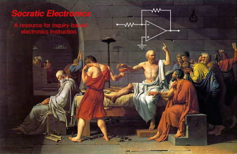
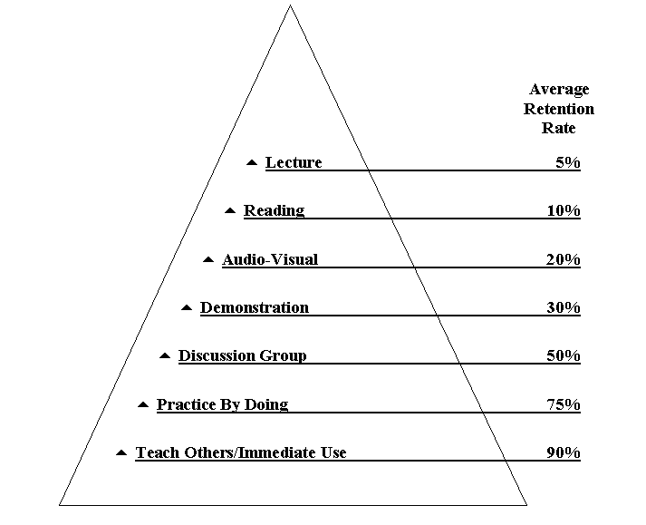

 Take me to the worksheets now!
These worksheets and all related files are licensed under the Creative Commons Attribution 3.0 United States License. To view a copy of this license, visit http://creativecommons.org/licenses/by/3.0/us/ or send a letter to Creative Commons, 171 Second Street, Suite 300, San Francisco, California, 94105, USA.
A copy of the Attribution License is included with the files.
We live in a world where the accumulation of knowledge is exponential over time, and where the ability to continuously learn and make sound judgments is essential to survival. Formal education ought to play an important role in preparing individuals to succeed in this environment, but many traditional modes of education actually discourage development of independent thinking skills necessary for success.
The most important thing any educator can impart to a student, in any context, is the ability to teach themselves. When teachers dispense knowledge to students in the traditional lecture format -- where students passively watch and listen -- they deny students deep interaction with the subject matter. Furthermore, instructor-centered pedagogy assumes and reinforces the debilitating notion that education can only happen in the presence of a superior: You (the student) need me (the teacher) in order to learn.
Placing students at the center of the instructional process breaks this dependency. A time-tested way of centering instruction around students is to teach by asking questions. This is generally called the ``Socratic method,'' made famous by the Greek philosopher Socrates. Another way to center instruction around students is to have them share their new-found knowledge with others. As any teacher knows, ``when you teach, you learn twice.'' I have found that a synthesis of these two instructional techniques -- stimulating student thought by asking lots of questions, and consolidating new-found knowledge through presentation -- not only fosters learning at a deeper level than I have ever experienced in a lecture-based course, but also builds confidence and self-teaching ability within students.
The purpose of this website is to provide both rationale and resources for research/discussion-based instruction to instructors everywhere. Central to the Socratic Electronics project is a large collection of questions and answers, intended as student assignments. By requiring students to research answers to these questions, then present their findings in class, students learn how to locate information, problem-solve, collaborate, and clearly articulate their thoughts while learning the basic subject matter. While the resources provided on this site are specifically designed for teaching electronics, the method itself is applicable to a wide variety of disciplines. I welcome constructive criticism, as well as participation in the development of this learning resource.
An important feature of these questions and answers is that they are configurable. They are organized in such a format as to be assembled into custom worksheets suitable for use in a variety of electronics classroom settings. Thus, you are not bound to using the compiled worksheets as they appear on this website. Rather, you may easily select which problems you wish to have on your own worksheet(s), and create them automatically by editing and executing a simple computer ``script'' file.
For those interested in the genesis and application of this teaching philosophy, here is a ``manifesto'' I've written on the subject of learning to learn. It briefly chronicles my experiences with this learning method during the first year of its application in my class.
A new exhibit has been added to the Topical Worksheets page: a section detailing the design and construction features of special printed circuits for use in teaching and assessing troubleshooting skills. It is listed in the new ``PCB'' section of that page.
To read more about contributions to this project, click here.
I came across this interesting graphic on the internet, from the National Training Laboratories Institute for Applied Behavioral Science (300 N. Lee Street, Suite 300, Alexandria, VA 22314. 1-800-777-5227):
According to the NTL, this pyramid was developed as part of a study during the 1960's. It amazed me that I never saw this ``pyramid'' during my own educational philosophy classes. Of course, I saw the one contrasting the different sensory modes (listening, reading, doing), but was never shown anything as directly critical of lecture as this.
I draw a significant amount of inspiration from the writings of other educators. Here, I share with you some thoughts of fellow teachers with philosophies similar to mine.
Chris Sells of Microsoft writes about his own experiences learning how to learn, while working as a trainer. Click here for a direct link to his website.
The National Education Association produces a professional journal called Thought and Action. Over the years, this journal has presented several outstanding essays on educational reform. I present links to some of them here (note: all articles are in Adobe PDF format).
In the summer of 2007 I was interviewed in an audio podcast by Grant Swaim, who runs a website devoted to advancing the art of education for automotive technology instructors. Grant wanted to know more about the process of research/discussion-based learning I wrote about in my NEA journal paper, and we spent about an hour discussing this over the telephone. Click here to download a copy of the MP3-format podcast audio file.
Topical worksheets (short worksheets focused on individual topics). For those of you who don't want to go through the trouble of ``compiling'' your own custom worksheets, you may simply download as many topical worksheets as you need and teach with those.
Here are some custom worksheets, showing how large sets of questions may be compiled together into worksheets spanning several topics:
This is the technically easiest option for you if you wish to download all completed worksheets in one step, rather than select them individually from the list of topics.
To install all ``compiled'' worksheets in PDF format to your computer, follow these steps:
All source files for the project in their entirety (uncompiled), as a single compressed file: selec.tar.gz. This is a far more compact file than either of the pre-compiled worksheet files.
To install Socratic Electronics on your computer from these source files, you will need to be running the following software:
This project was created on a computer running the Linux operating system, where all these utilities are standard. The best advice I can give to people wanting to compile these worksheets on a Microsoft Windows machine is to download the free program named Cygwin, which provides you with a Bash command shell plus all the other necessary utilities (make, cat, sed, tex, dvips, ps2pdf) when fully installed.
Assuming all the necessary utilities are in place and ready to go on your computer, follow these steps to install and compile all worksheets:
If you intend to compile your own worksheets from source files, it is assumed you are an experienced computer user and are capable of solving the inevitable software setup problems on your own. Please do not email me with questions on how to install the necessary software on your computer. If you experience trouble working with the source files, I recommend you simply download the precompiled worksheets instead.
Any submissions, comments, or good jokes? Send them to the following email address (a live link is omitted in an effort to thwart spam robots):
{kind=link}